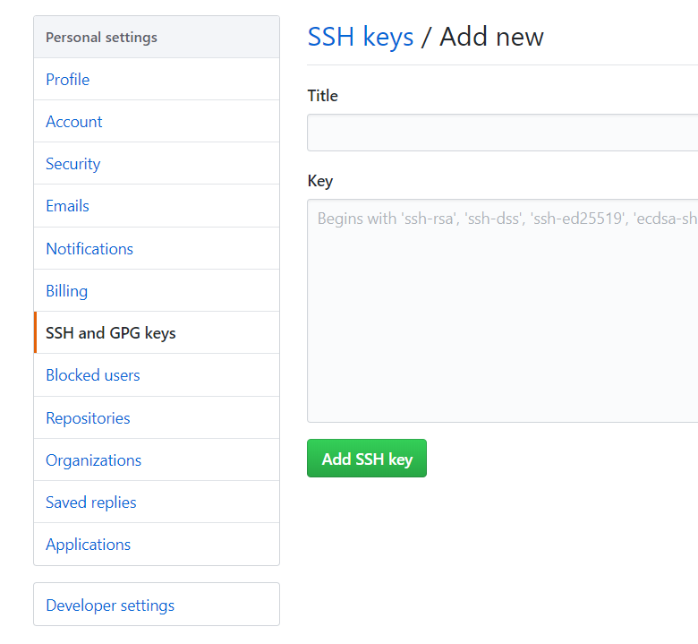
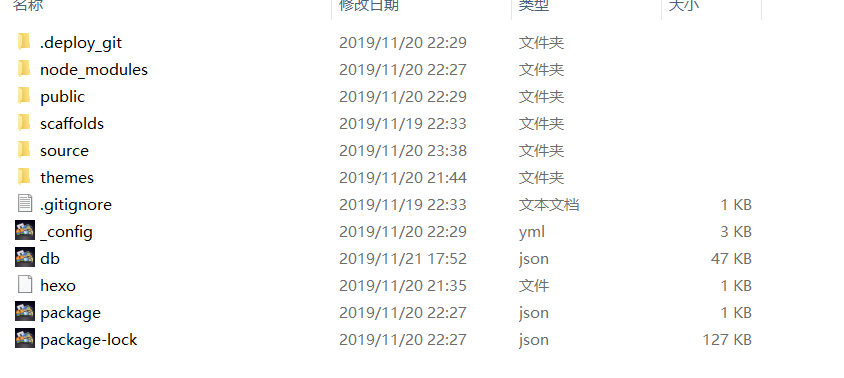
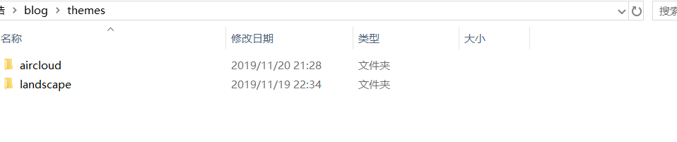
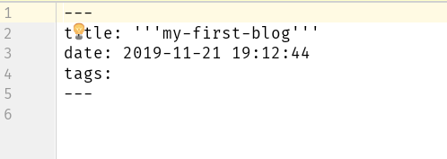

1. 前言
使用github pages服务搭建博客的好处有：
- 全是静态文件，访问速度快；
- 免费方便，不用花一分钱就可以搭建一个自由的个人博客，不需要服务器不需要后台；
- 可以随意绑定自己的域名，不仔细看的话根本看不出来你的网站是基于github的；
- 数据绝对安全，基于github的版本管理，想恢复到哪个历史版本都行；
- 博客内容可以轻松打包、转移、发布到其它平台；
- 等等；
1.1. 一些准备工作
- 拥有一个GitHub账号， 没有可以去github的官网注册一个
- 安装了node和npm并有一定的了解
- 安装了git
window
git@2.24
node@10.15.3
hexo@4.0.02. 搭建github博客
2.1. 先在账户上创建一个仓库
注册好github账号后， 在添加符号处选择 new repository 添加一个仓库。需要注意的是，在创建时仓库的名字要设为 你的用户名.github.io。比如说你的github用户名是hi，那么你的仓库名字就应该为hi.github.io。（必须使用自己的用户名，否则会无效）。搭建好博客后，你就可以通过 http://hi.github.io 去访问了。
由此可见，每一个github账户最多只能创建一个这样可以直接使用域名访问的仓库。
需要注意的是:
1、注册的邮箱一定要验证，否则不会成功；
2、仓库名字必须是：username.github.io，其中username是你的用户名；
3、仓库创建成功不会立即生效，需要过一段时间，大概10-30分钟，或者更久，我的等了半个小时才生效；2.2. 绑定域名
当然，你不绑定域名肯定也是可以的，就用默认的 xxx.github.io 来访问，如果你想更个性一点，想拥有一个属于自己的域名，那也是OK的。这里作者没有绑定域名， 因此就不过多介绍了， 想绑定域名的小伙伴可以去 http://blog.haoji.me/build-blog-website-by-hexo-github.html?from=xa#bang-ding-yu-ming 参考学习。
3. 配置SSH key
为什么要配置这个呢？因为你提交代码肯定要拥有你的github权限才可以，但是直接使用用户名和密码太不安全了，所以我们使用ssh key来解决本地和服务器的连接问题。
我们打开git bash
1 | $ cd ~/.ssh |
上面的命令是为了检查是否已经存在SSH, 如果提示: No such file or directory 说明你是第一次使用git。
1 | ssh-keygen -t rsa -C "邮件地址" |
然后连续3次回车，最终会生成一个文件在用户目录下，打开用户目录，找到.ssh\id_rsa.pub文件，记事本打开并复制里面的内容，打开你的github主页，进入个人设置 -> SSH and GPG keys -> New SSH key：
将刚复制的内容粘贴到key那里，title随便填，保存。
3.1. 测试是否成功
1 | $ ssh -T git@github.com # 注意邮箱地址不用改 |
如果提示Are you sure you want to continue connecting (yes/no)?，输入yes，然后会看到：
1 | Hi HJ-Hao! You’ve successfully authenticated, but GitHub does not provide shell access. |
看到这个信息说明SSH已配置成功！
这时你还需要配置你的用户信息:
1 | $ git config --global user.name "John Doe" #填写你的github用户名 |
接下来我们开始搭建
4. 使用hexo写博客
4.1. 关于hexo
Hexo 是一个快速、简洁且高效的博客框架。Hexo 使用 Markdown（或其他渲染引擎）解析文章，在几秒内，即可利用靓丽的主题生成静态网页。(这段取自hexo官网)
官网: http://hexo.io
github: https://github.com/hexojs/hexo
4.2. hexo的原理
由于github pages存放的都是静态文件，博客存放的不只是文章内容，还有文章列表、分类、标签、翻页等动态内容，假如每次写完一篇文章都要手动更新博文目录和相关链接信息，相信谁都会疯掉，所以hexo所做的就是将这些md文件都放在本地，每次写完文章后调用写好的命令来批量完成相关页面的生成，然后再将有改动的页面提交到github。
4.3. 一些安装时的注意事项
1、很多命令既可以用Windows的cmd来完成，也可以使用git bash来完成，但是部分命令会有一些问题，为避免不必要的问题，
建议全部使用git bash来执行；
2、hexo不同版本差别比较大，网上很多文章的配置信息都是基于2.x的，所以注意不要被误导；
3、hexo有2种_config.yml文件，一个是根目录下的全局的_config.yml，一个是各个theme下的；4.4. 安装
1 | $npm install -g hexo |
4.5. 初始化
新建一个文件夹（名字可以随便取），比如我是在用户目录下创建的，由于这个文件夹将来就作为你存放代码的地方，所以最好不要随便放。
1 | $ mkdir blog #创建一个blog文件 |
hexo会自动下载一些文件到这个目录，包括node_modules。
1 | $ hexo g # 生成 |
执行以上命令之后，hexo就会在public文件夹生成相关html文件，这些文件将来都是要提交到github去的。

hexo s是开启本地预览服务，打开浏览器访问 http://localhost:4000 即可看到内容。如果该端口被占用了可以通过下面命令改变端口:
1 | $ hexo s -p <这里写端口> |
第一次初始化的时候hexo已经帮我们写了一篇名为 Hello World 的文章。
4.6. 修改主题
如果你觉得默认的主题不好看， 那我们先来修改主题。 这是 官方主题。我这个博客的主题是: AirCloud
大家也可以选择自己喜欢的主题。 选择好后，我们将它们下载下来
1 | $ git clone git@github.com:aircloud/hexo-theme-aircloud.git |
下载好后将这个文件放入你创建的博客文件夹下的theme文件中
修改_config.yml中的theme: landscape改为theme: aircloud（注意这里主题的名字要和主题文件的文件名一致），然后重新执行hexo g来重新生成。
如果出现一些莫名其妙的问题，可以先执行hexo clean来清理一下public的内容，然后再来重新生成和发布。
4.7. 上传之前
在上传代码到github之前，一定要记得先把你以前所有代码下载下来（虽然github有版本管理，但备份一下总是好的），因为从hexo提交代码时会把你以前的所有代码都删掉。
4.8. 上传到github
如果你一切都配置好了，发布上传很容易，一句hexo d就搞定，当然关键还是你要把所有东西配置好。
首先，ssh key肯定要配置好。
其次，配置_config.yml中有关deploy的部分：
1 | deploy: |
此时直接执行hexo d的话一般会报如下错误：
1 | Deployer not found: github 或者 Deployer not found: git |
这时我们需要安装一个插件
1 | npm install hexo-deployer-git --save |
其它命令不确定，部署这个命令一定要用git bash，否则会提示Permission denied (publickey)。
打开你的git bash，输入hexo d就会将本次有改动的代码全部提交，没有改动的不会。
4.9. 常用hexo命令
一些常用的命令
1 | hexo new "postName" #新建一篇文章 |
下面是一些命令的简写
1 | hexo s == hexo server |
当然命令也可以增加一些参数, 比如:
1 | hexo s -g #生成并本地预览 |
更多的命令请浏览官方文档
4.11. _config.yml
这里面都是一些全局配置，每个参数的意思都比较简单明了，所以就不作详细介绍了。
需要特别注意的地方是，冒号后面必须有一个空格，否则可能会出问题。
4.12. 写博客
定位到我们的hexo根目录，执行命令：
1 | hexo new "my-first-blog" |
hexo会帮我们在_posts下生成相关md文件， 我们打开后就可以直接编写了。当然我们也可以选择直接创建，不过使用命令可以帮我们默认生成一些信息
这个用—分隔的区域官方称为Front-matter， 它用于指定个别文件的变量。一些常见的参数有：
1、title 文章的标题
2、date 建立日期
3、update 文章更新的时间
4、tags 文章的标签（不适用于分页）
5、categories 文章的分类（不适用于分页）然后我们就可以直接在这个md文件下编写我们的博客了。
5. 一些参考
http://blog.haoji.me/build-blog-website-by-hexo-github.html?from=xa#can-kao
http://www.cnblogs.com/zhcncn/p/4097881.html
http://www.jianshu.com/p/05289a4bc8b2